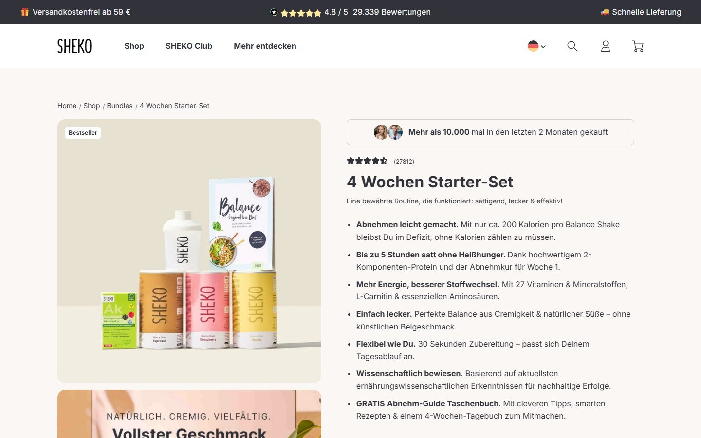

Anti‑guesswork.
Pro growth.
Prepared for Dustin Fleck, Co‑Founder, SHEKO. 386,000 visitors a month already land on sheko.com. We make more of them buy. Proven by A/B tests, not opinions.

Nobody buys a shake
for the shake.
Nobody buys a shake plan for the shake. They buy the four weeks they hope it gets them through.
So the first screen has one job: show that it works for people like them, before they have to decide anything.
Your strongest answer, 11,000,000 meals sold and more than 10,000 Starter-Sets bought in two months, only shows up on the product page. The homepage opens with a question and two equal buttons.
The proof is there.
It's just hiding.

Four leaks.
Zero excuses.
Proof sits one click deep
Homepage · TrustThe homepage opens on a question, "Balance gewinnen oder Gewicht verlieren?", with two buttons of equal weight. The 11,000,000 meals sold and the 10,000 Starter-Sets in two months only appear after a click. We would test leading with them.
Three choices before the cart
Starter-Set · MobileThe Starter-Set asks for three separate flavour picks before it can go in the cart, and on a phone the first screen shows no price and no button. A preselected best seller mix with a simple change option is a fast test.
Week four has no next step
Starter-Set · RetentionThe Starter-Set is a four week program, yet its page shows no subscribe or reorder option, although SHEKO runs subscriptions (Abo verwalten in the footer). Week four is when the customer decides, so the next step belongs on the page.
The discount waits at the bottom
Homepage · List growthThe secret discount and the 60 page metabolism guide are offered in a block at the very end of the homepage, after the reviews. Testing the same offer higher up and on product pages could turn more of your visitors into a list.
Three tests.
Day one.
Proof first homepage
Open with 11,000,000 meals sold and the 4.8 rating, one main button to the Starter-Set.
One tap Starter-Set
Preselect the three most popular flavours, put price and button in the first mobile screen.
The week four bridge
A reorder or subscribe option on the Starter-Set page, shown before the four weeks run out.
At 386,000 visits a month, every 0.1 point of conversion rate is about 386 more orders a month, from traffic you already have.Every idea runs as an A/B test first. Only the winners ship.
We don't do opinions.
We do A/B tests.
Redesigns based on taste? Magic. Best practices copied from a blog? What a coincidence. We test every change on your real visitors and keep only what makes you money. 120+ online shops already work this way with us.


Conversion. Only.
No ads, no SEO, no side quests. ConvertPolo runs the whole experimentation program for e-commerce and D2C brands, from research to analysis, as an extension of your team.
 Anirban ChakrabortyFounder & CEO
Anirban ChakrabortyFounder & CEO Saurabh PatwaCo-Founder
Saurabh PatwaCo-Founder Ansuya PoudelBrand & Growth
Ansuya PoudelBrand & Growth Ankita DagaUX UI Design Lead
Ankita DagaUX UI Design Lead Official agency partner
Official agency partnerYou approve.
We run everything else.
Fully managed, one test after the next. No roadmap fights, no developer queue.
Analytics, session recordings, voice of customer
Ranked by expected impact and speed
Our designers and developers, not your roadmap
Every test verified before a visitor sees it
Statistical significance, not gut feeling
Winners roll out, learnings feed the next test
Real growth. Real receipts.

Anothersole
D2C · FootwearRebuilt product discovery and the shopping journey.

Roshambo
D2C · EyewearTargeted UX experiments across the store.

Theater
D2C · FashionMobile experience redesign.

Beyond by Vera
D2C · Premium fashionSlide-out cart and a timed recovery popup.
Thirty minutes.
Zero fluff.
Thirty minutes on sheko.com. We walk you through what we saw and the first three tests we would run, on your real numbers instead of ours.